Adidas X Outdoor Active. Combining route-finding, reviews, events and product discovery.
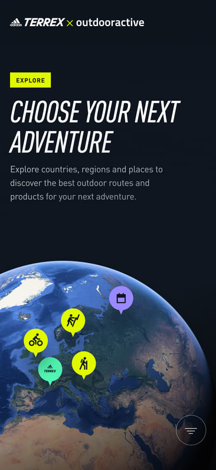
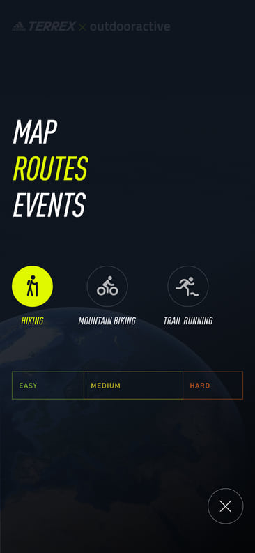
Big Picture
Designed for exploration, carrying on our relationship with the Adidas Outdoor team we were asked to create a product experience that utilised Outdoor Actives route data, yet felt distinctly Adidas.
Role
As Design Director I designed the initial concept including the wider visual language, UX and core navigation. Working hands on, and overseeing another designer I delivered the proof of concept for mobile.
Approach
The goal was to combine route information and product cards together to create an experience that felt seamless, intentional and grounded in Adidas’s design system. Ultimately we wanted customers to play with the product and unearth new products as they explored.
Outcome
A modular layout that could easily accommodate a mix of content types and formats. This enabled Adidas to promote their athlete roster and official event programme. Initially designed for mobile, the UX was later adapted for large touch-screen point-of-sales displays in the flagship Outdoor Terrex store in Munich.
Credit
Edwin D’Mello, Designer
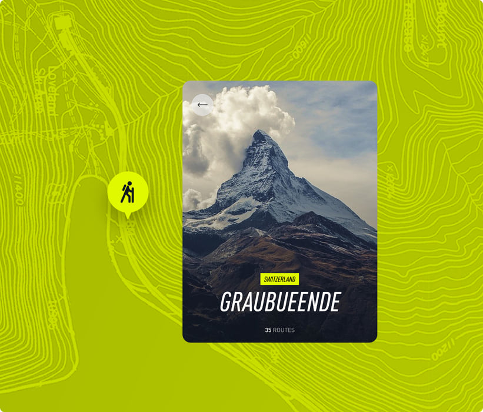
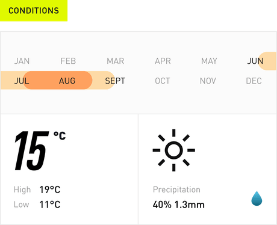
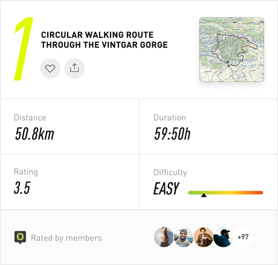
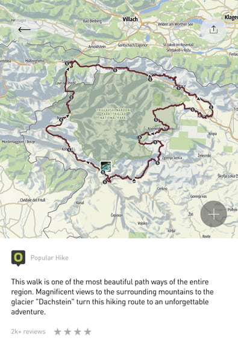
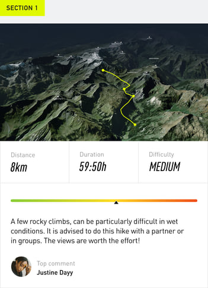
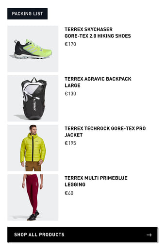
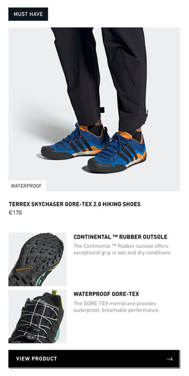
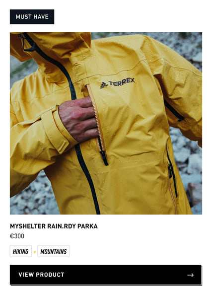
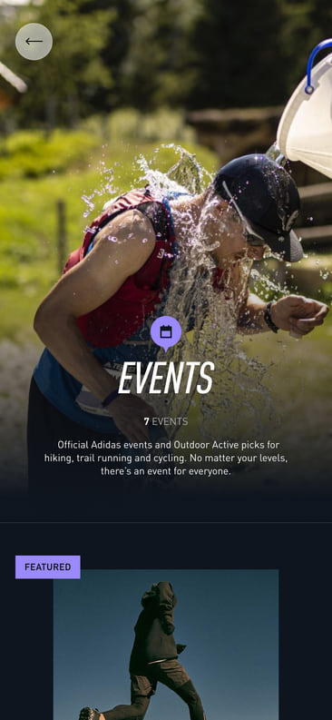
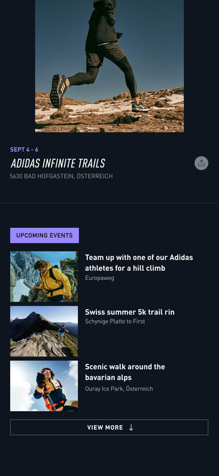
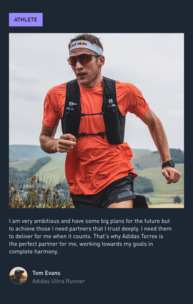
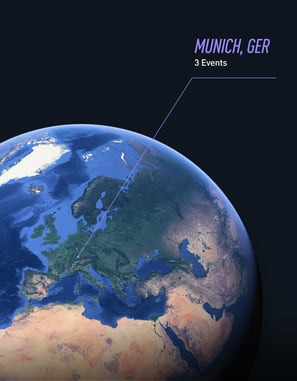
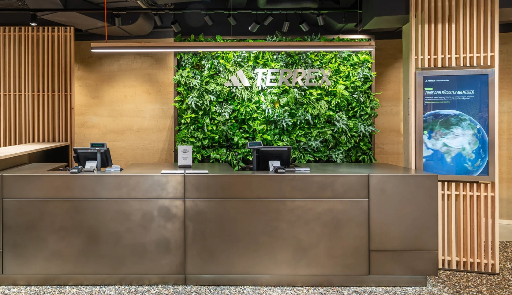